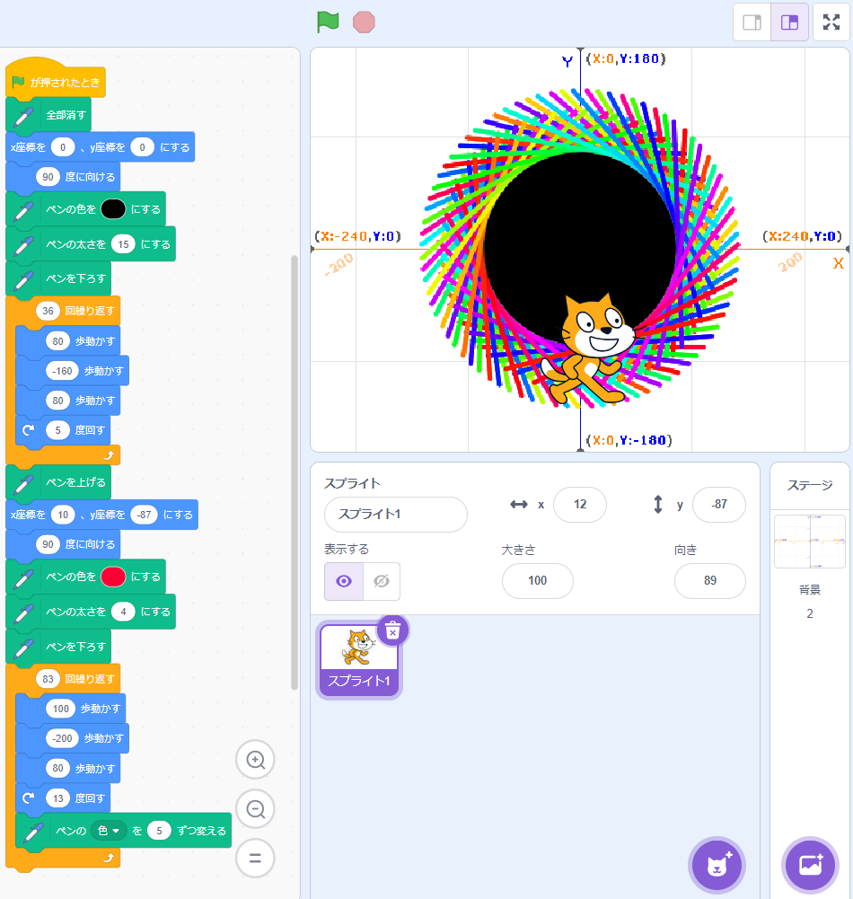

1-1 サイエンスアート

1.内容
スクラッチを使って線を書くプログラムを作り、プログラムは上の写真のようになった。拡張機能の「ペン」を使い、ペンの色を変えたりしながら、ネコの動きに合わせて線を引いていく。まず、太さ15の黒いペンの線を回転させながら繰り返し引いて、黒い丸を作る。そして、その周りに、線を引いては少し角度と色を変えるのを繰り返して、上の写真のようなアートができた。
2.感想
周りのカラフルな線の数をできるだけ増やしながら、綺麗に見えるようにこだわった。中央の黒い円と外側の色鮮やかな部分をぴったり合わせるのが難しかった。